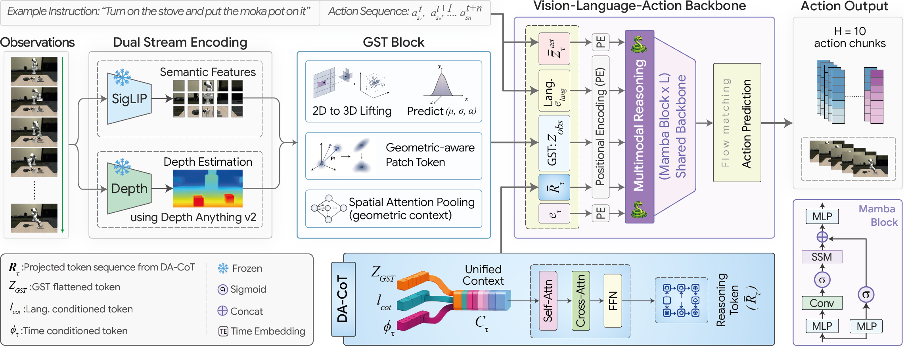
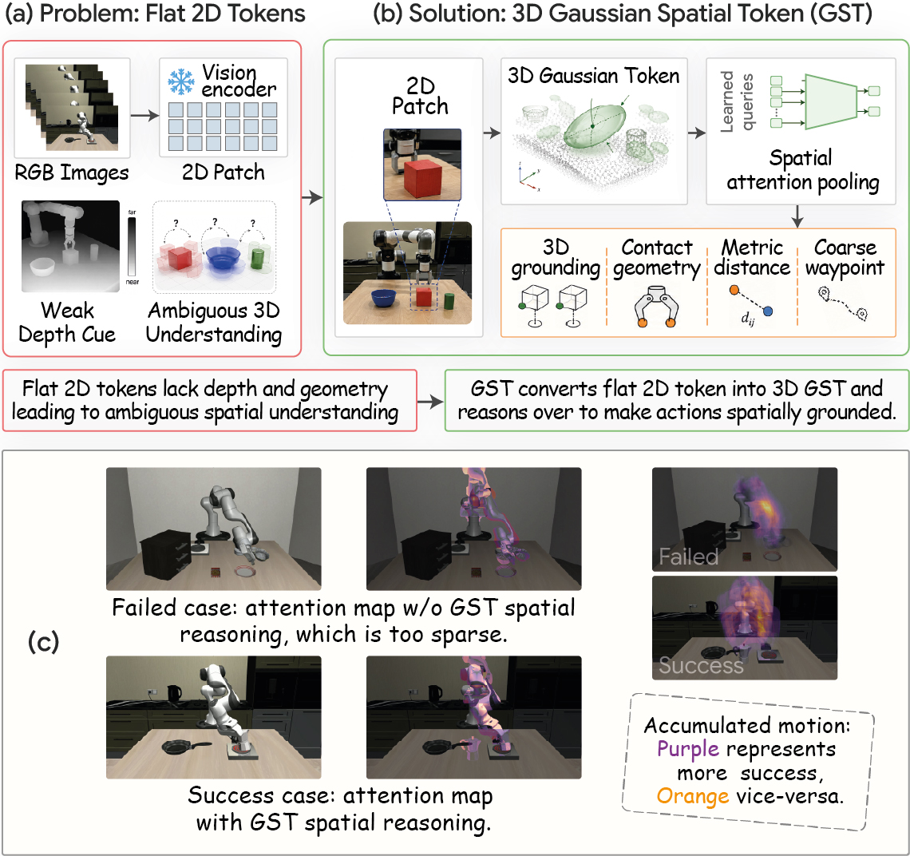
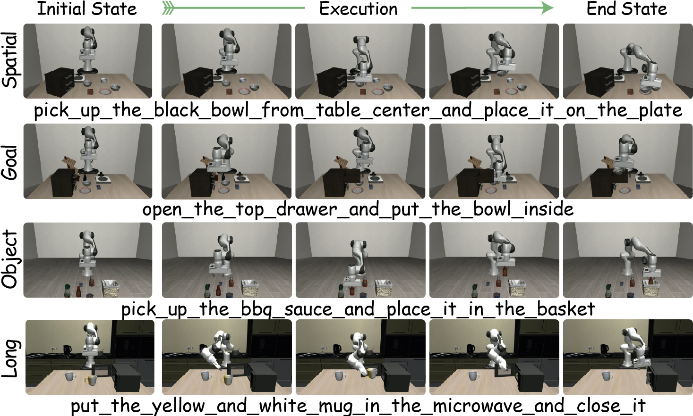
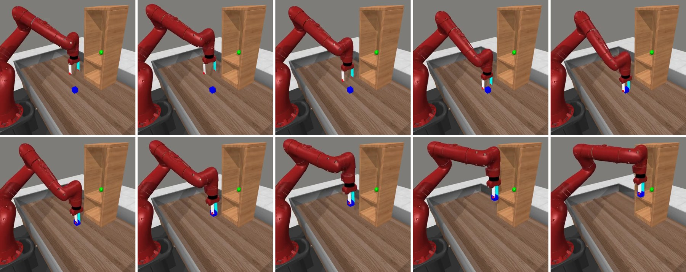
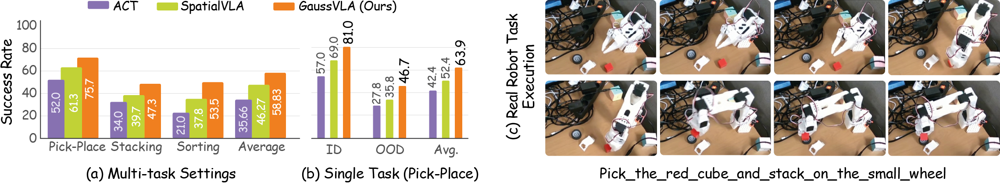

GaussVLA
Geometry-Aware Spatial Reasoning for Vision-Language-Action Model
1Yeungnam University, Republic of Korea 2Kyungpook National University, Republic of Korea *Corresponding author
Framework


LIBERO
| Method | Venue | Spatial | Object | Goal | Long | Average | Parameters |
|---|---|---|---|---|---|---|---|
| DP | RSS'23 | 78.3 | 92.5 | 68.3 | 50.5 | 72.4 | 80M |
| CoRL'24 | 53.8 | 81.5 | 56.3 | 41.7 | 58.3 | 24M | |
| QueST | NeurIPS'24 | 89.0 | 90.0 | 88.4 | 87.0 | 88.6 | 152M |
| OpenVLA | CoRL'24 | 84.7 | 88.4 | 79.2 | 53.7 | 76.5 | 7B |
| SpatialVLA | RSS'25 | 88.2 | 89.9 | 78.6 | 55.5 | 78.1 | 4B |
| ThinkAct | NeurIPS'25 | 88.3 | 91.4 | 87.1 | 70.9 | 84.4 | 7B |
| CoT-VLA | CVPR'25 | 81.5 | 91.6 | 87.6 | 69.0 | 82.43 | 7B |
| Mask2Act | BMVC'25 | 76.1 | 68.7 | 75.1 | 30.6 | 62.6 | 7B |
| TraceVLA | ICLR'25 | 84.6 | 85.2 | 75.1 | 54.1 | 74.8 | 4B |
| π0 | RSS'26 | 90.0 | 86.0 | 95.0 | 73.0 | 86.0 | 3.3B |
| SUREFlow | IROS'26 | 94.8 | 91.0 | 93.8 | 90.2 | 92.5 | 179.1M |
| GaussVLA | BMVC'26 | 100 | 95.8 | 95.3 | 83.0 | 93.5 | 1B |
Success rate (%) on the four LIBERO suites, 40 rollouts per task. Bold: best, underline: second best. Click a column header to sort.

Meta-World & CALVIN
Meta-World success rate (%) by difficulty split
| Method | Venue | Easy | Mid | Hard | V.Hard | Avg. |
|---|---|---|---|---|---|---|
| BC-RNN | CoRL'21 | 4.5 | 3.8 | 3.2 | 3.0 | 3.6 |
| DP | IJRR'25 | 83.6 | 31.1 | 9.0 | 26.6 | 37.6 |
| TinyVLA | ICRA'25 | 77.6 | 21.5 | 11.4 | 15.8 | 31.6 |
| π0 | RSS'26 | 71.8 | 48.2 | 41.7 | 30.0 | 47.9 |
| GaussVLA | BMVC'26 | 92.7 | 47.9 | 37.3 | 41.6 | 54.9 |
CALVIN ABCD→D tasks completed in a row, 10% subset
| Method | Venue | 1 | 2 | 3 | 4 | 5 | Avg. Len. |
|---|---|---|---|---|---|---|---|
| MCIL | RSS'21 | 0.37 | 0.027 | 0.002 | 0.000 | 0.000 | 0.40 |
| MT-R3M | CoRL'22 | 0.408 | 0.146 | 0.043 | 0.014 | 0.002 | 0.61 |
| RT-1 | RSS'23 | 0.249 | 0.069 | 0.015 | 0.006 | 0.000 | 0.34 |
| GR-1 | ICLR'24 | 0.778 | 0.533 | 0.332 | 0.218 | 0.139 | 2.0 |
| GaussVLA | BMVC'26 | 0.637 | 0.367 | 0.291 | 0.179 | 0.000 | 1.474 |

LIBERO-PRO
| Model | LIBERO Goal | LIBERO Spatial | LIBERO 10 | LIBERO Object | Avg. SR | ||||||||||||||||
|---|---|---|---|---|---|---|---|---|---|---|---|---|---|---|---|---|---|---|---|---|---|
| Obj | Pos | Sem | Task | Env | Obj | Pos | Sem | Task | Env | Obj | Pos | Sem | Task | Env | Obj | Pos | Sem | Task | Env | ||
| OpenVLA | 0.96 | 0.00 | 0.98 | 0.00 | 0.98 | 0.97 | 0.00 | 0.97 | 0.00 | 0.89 | 0.81 | 0.00 | 0.96 | 0.00 | 0.85 | 0.98 | 0.00 | 0.98 | 0.00 | 0.00 | 0.52 |
| π0.5 | 0.97 | 0.38 | 0.97 | 0.00 | 0.46 | 0.97 | 0.20 | 0.97 | 0.01 | 0.46 | 0.92 | 0.08 | 0.93 | 0.01 | 0.46 | 0.98 | 0.17 | 0.96 | 0.01 | 0.73 | 0.53 |
| π0 | 0.94 | 0.00 | 0.93 | 0.00 | 0.39 | 0.95 | 0.00 | 0.97 | 0.00 | 0.60 | 0.79 | 0.00 | 0.82 | 0.00 | 0.27 | 0.94 | 0.00 | 0.90 | 0.00 | 0.29 | 0.44 |
| GaussVLA | 0.81 | 0.00 | 0.70 | 0.00 | 0.00 | 0.93 | 0.00 | 0.73 | 0.00 | 0.27 | 0.83 | 0.00 | 0.67 | 0.00 | 0.00 | 0.92 | 0.00 | 0.63 | 0.00 | 0.17 | 0.33 |
Normalized success under five perturbation types: object (Obj), position (Pos), semantics (Sem), task (Task) and environment (Env).
SO-101 Robot
Multi-task settings success rate (%)
Single task: Pick-Place success rate (%)
| Method | ID | OOD | Avg. |
|---|---|---|---|
| ACT | 57.0 | 27.8 | 42.4 |
| SpatialVLA | 69.0 | 35.8 | 52.4 |
| GaussVLA | 81.0 | 46.7 | 63.9 |
OOD: camera shifted by ±5 cm and ±10°, never seen in training. 50 teleoperated demonstrations per task.

What each module adds
Core contribution and efficiency ablation. Efficiency measured on a single NVIDIA RTX Pro 6000 Blackwell; latency is end-to-end.
Query sensitivity LIBERO (%) and latency (ms)
| Ng (GST queries) | 8 | 32 | 64 | 128 | 256 |
|---|---|---|---|---|---|
| LIBERO | 86.4 | 90.7 | 92.4 | 93.5 | 93.6 |
| Latency | 11.6 | 12.0 | 12.4 | 12.97 | 14.1 |
| Nr (DA-CoT queries) | 1 | 2 | 4 | 8 | 16 |
| LIBERO | 91.8 | 92.8 | 93.5 | 93.4 | 92.9 |
| Latency | 12.7 | 12.8 | 12.97 | 13.2 | 13.7 |
Bold: default setting.
Latency breakdown ms per step, batch 1, BF16
- SigLIP-SO400M/14 (frozen)5.20
- Depth-Anything-V2 ViT-L (frozen)3.30
- GST module (Ng = 128)1.42
- Mamba backbone1.50
- DA-CoT conditioner0.70
- Action decoder0.25
- Flow-matching ODE, 10 Euler steps0.60
- Total12.97
Single Episode
BibTeX
@inproceedings{Sarowar_2026_BMVC,
author = {Md Selim Sarowar and Md Tanvir Islam and Sungho Kim and Sangtae Ahn},
title = {GaussVLA: Geometry-Aware Spatial Reasoning for Vision-Language-Action Model},
booktitle = {37th British Machine Vision Conference 2026, {BMVC} 2026, Lancaster, UK, November 23-26, 2026},
publisher = {BMVA},
year = {2026},
url = {https://bmva-archive.org.uk/bmvc/2026/assets/papers/Paper_121/paper.pdf}
}